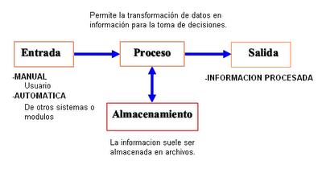
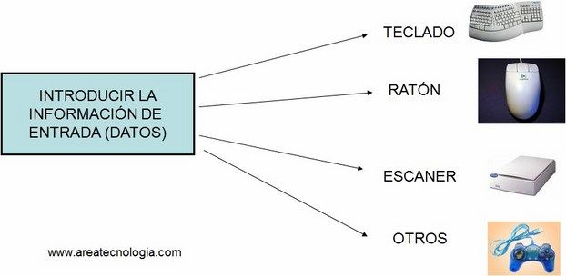

Entrada de Información: Es el proceso mediante el cual el Sistema de Información toma los datos que requiere para procesar la información. Las entradas pueden ser manuales o automáticas. Las manuales son aquellas que se proporcionan en forma directa por el usuario, mientras que las automáticas son datos o información que provienen o son tomados de otros sistemas o módulos. Esto último se denomina interfases automáticas.

imagen#1: Esta imagen muestra la relación de los tipos de entradas con el sistema, las manuales y las automáticas

imagen#2: Esta imagen muestra los dispositivos que sirven para introducir datos.
Las unidades típicas de entrada de datos a las computadoras son las terminales, las cintas magnéticas, las unidades de diskette, los códigos de barras, los escáneres, la voz, los monitores sensibles al tacto, el teclado y el mouse, entre otras.